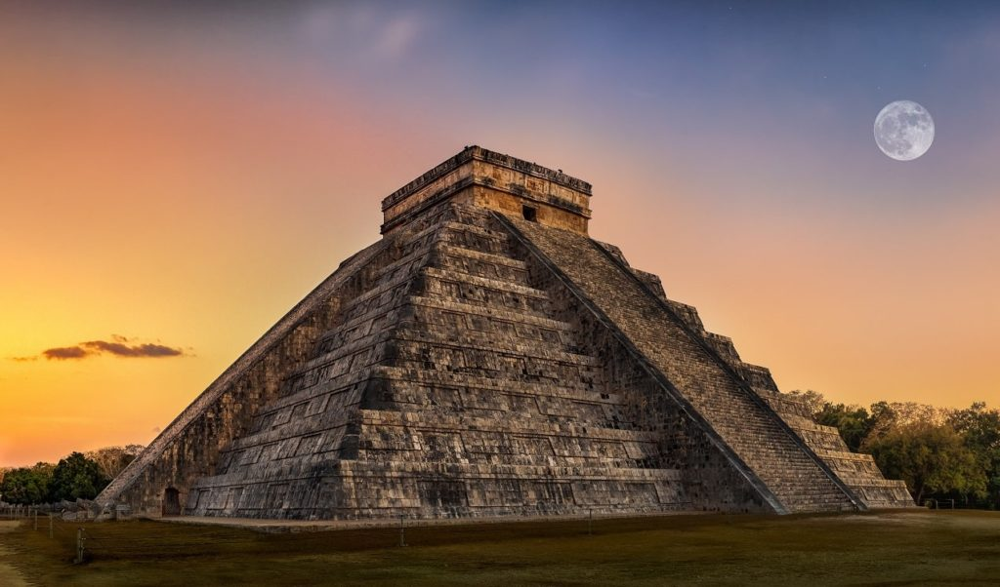

ARQUITECTURA
La arquitectura maya destaca por sus imponentes pirámides escalonadas, templos, palacios y observatorios construidos en piedra caliza con una precisa alineación astronómica. Caracterizada por la bóveda maya (arco falso), cresterías y decoración con estuco, se adaptaba a la topografía, creando centros ceremoniales con plazas abiertas, reflejando su compleja cosmovisión.
Características Principales:
Materiales: Uso predominante de piedra caliza, mampostería, y estuco para acabados.
Técnicas: Uso del arco maya o bóveda falsa (ménsulas) para techos, evitando grandes espacios interiores.
Estructuras: Templos sobre pirámides escalonadas, palacios con múltiples cuartos, observatorios y canchas para el juego de pelota.
Decoración: Fachadas complejas con mascarones (dios Chaac), relieves, glifos y pinturas murales.
Planificación: Ciudades organizadas en torno a plazas, calzadas (sacbé) y acrópolis, adaptadas al entorno natural.
Estilos Regionales: Destacan el estilo Petén (grandes cresterías), Puuc (mosaicos de piedra, fachadas complejas) y estilo Motagua.
La arquitectura maya es una de las expresiones más impresionantes de esta civilización, caracterizada por la construcción de grandes ciudades con templos, pirámides, palacios y observatorios, elaborados principalmente con piedra caliza. Estas construcciones no solo tenían funciones prácticas, sino también religiosas, políticas y astronómicas.
Las ciudades mayas estaban cuidadosamente planificadas. Contaban con plazas centrales rodeadas de edificios importantes, como templos y palacios, conectados por caminos elevados llamados sacbé. Ejemplos de estas ciudades se pueden observar en Tikal, Palenque y Calakmul.

Uno de los elementos más representativos son las pirámides escalonadas, que servían como base para templos en la parte superior. Estas eran utilizadas para ceremonias religiosas y rituales. Un ejemplo destacado es la pirámide de Kukulkán en Chichén Itzá, famosa por su precisión astronómica, ya que durante los equinoccios se proyecta una sombra en forma de serpiente. Los templos eran construcciones sagradas ubicadas en lo alto de las pirámides. Estaban decorados con esculturas, relieves y figuras de dioses. En ciudades como Palenque, los templos muestran gran detalle artístico y simbolismo religioso.
Los palacios eran residencias de los gobernantes y la nobleza. Estos edificios eran amplios, con varias habitaciones, patios interiores y pasillos. En Uxmal se pueden observar complejos palaciegos muy elaborados. Otro elemento importante fueron los observatorios astronómicos, utilizados para estudiar los astros. En Chichén Itzá se encuentra “El Caracol”, una estructura diseñada para observar los movimientos de Venus y otros cuerpos celestes.
También construyeron canchas para el juego de pelota, que tenían un significado ritual y simbólico. Estas se encuentran en muchas ciudades mayas y formaban parte importante de su vida social y religiosa.
Las técnicas de construcción mayas incluían el uso de piedra tallada, estuco para recubrir las superficies y pinturas de colores vivos. No utilizaban metal ni herramientas avanzadas, lo que hace aún más impresionante su nivel arquitectónico.
Además, las viviendas del pueblo eran más sencillas, hechas de materiales como madera, barro y palma, adaptadas al clima de la región. En regiones como Yucatán y Quintana Roo aún se pueden observar influencias de la arquitectura maya en construcciones actuales, especialmente en comunidades rurales.
En conjunto, la arquitectura maya refleja el conocimiento científico, la organización social y las creencias religiosas de esta civilización, siendo uno de sus legados más importantes y admirados en la actualidad.